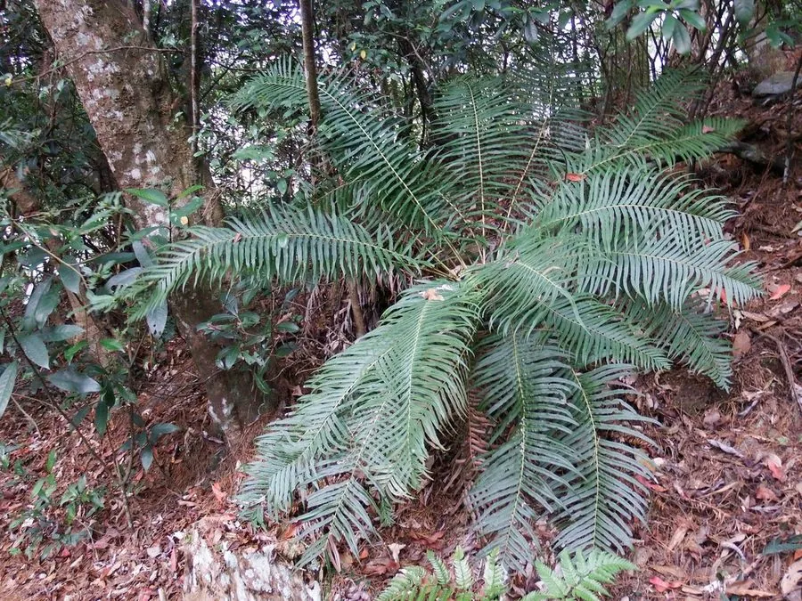

蕨类与裸子植物 · 植物界
苏铁蕨 Brainea insignis

乌毛蕨科苏铁蕨属大型陆生蕨类，植株外形酷似苏铁，主干粗壮、羽叶簇生顶端，是古老而珍稀的蕨类植物。
- 分类
- 门蕨类植物门纲水龙骨纲目水龙骨目科乌毛蕨科属苏铁蕨属
- 栖息环境
- 海拔 1000 米以下的山坡疏林与灌丛，喜温暖湿润半阴
- 地理分布
- 中国广东、广西、福建、海南、云南、贵州、台湾；越南、缅甸、印度
- 保护级别
- 国家二级重点保护野生植物；IUCN 暂无评估
物种志
苏铁蕨为乌毛蕨科苏铁蕨属大型陆生蕨类，植株高可达一点五米，主干粗壮直立，密被棕褐色鳞片，形似苏铁的树干。叶片簇生于主干顶端，一回羽状，羽片披针形，革质，表面深绿有光泽，幼叶拳卷。孢子囊群线形，沿羽片中脉两侧排列，成熟时褐色，孢子期夏秋季。
苏铁蕨分布于中国广东、广西、福建、海南、云南、贵州、台湾等地，越南、缅甸、印度也有，多生于海拔一千米以下的山坡疏林和灌丛。它喜温暖湿润和半阴环境，适宜酸性土壤，不耐寒。植株形似苏铁而实为蕨类，是研究蕨类演化的重要材料，也是优美的观叶植物；根状茎在民间入药，有清热解毒之效。由于野生资源因采挖和生境破坏而减少，被列为国家二级重点保护野生植物。
形态与习性
- 株高可达 1.5 m，主干粗壮
- 叶形一回羽状，羽片革质
- 孢子期夏秋季，囊群线形
- 光照喜半阴，忌强光暴晒
- 水分喜湿润，忌积水
- 土壤疏松肥沃的酸性土
- 主要用途观叶植物，根茎入药
趣味知识
- 苏铁蕨虽名字带蕨，外形却酷似苏铁，常被误认为裸子植物。
- 它的幼叶拳卷舒展，是蕨类植物典型的拳卷叶。
- 苏铁蕨是较古老的蕨类，对研究蕨类植物的演化具有重要价值。